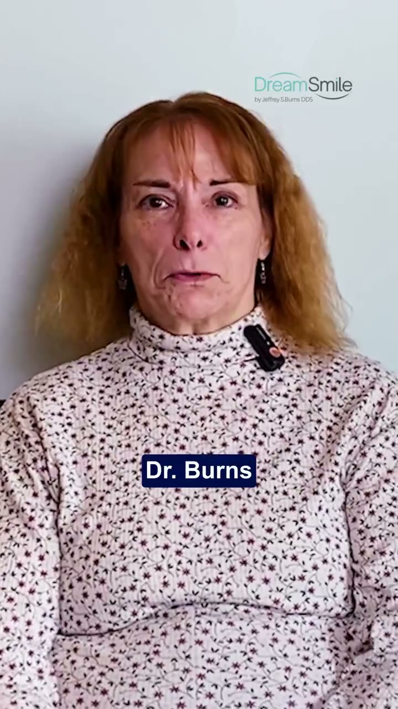

A real patient's story
He came in with a notepad full of questions
“I'd done two years of research online and only gotten more confused. Dr. Burns went through my whole list. He told me I'd need a graft and exactly why, what each part of the implant does, and when I'd be back at work. Nothing that happened after surprised me, and that's exactly what I wanted.
A DreamSmile™ patient · Shenandoah County
★★★★★ Rated 5.0 by patients on Google



 Get every answer, including cost, in our free pricing and information guide.
Get every answer, including cost, in our free pricing and information guide.